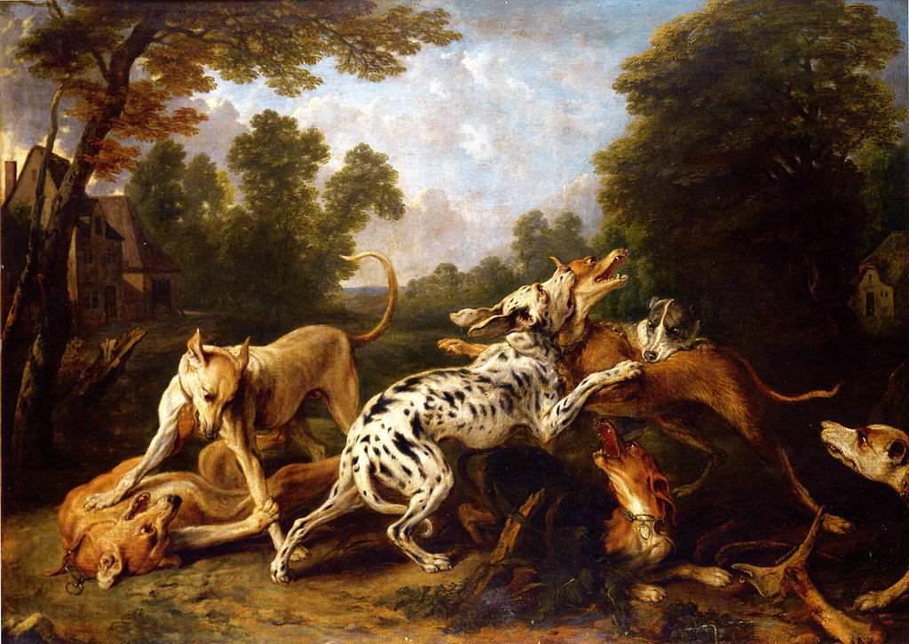

Banjo Paterson
Andrew Barton "Banjo" Paterson was born in 1864 on a farm in the ‘outback’, a term Australians use for their wild countryside - this was the setting for many of his stories, songs and poems.
He had a woman to teach him at home until he was old enough to ride a horse, when he could travel to school each day. He was good both at his studies and at sports. He later went on to become a lawyer (although he never studied at university).
Paterson was also a journalist though and reported on the Boer War in South Africa and the Boxer Rebellion in China. He served during World War I as an ambulance driver in Europe and was wounded. He then became a vet and looked after horses in the war, before heading his own soldiers in North Africa.
Paterson’s writing made him very famous in Australia, as he still is today, and all over the world. He died of a heart attack in 1941 at the age of 76. By the way, his nickname, ‘Banjo’, was taken from his favourite horse.
Dog-fighting isn't a popular sport today. To begin with, it's illegal. People say it’s a cruel sport which society has decided to reject. However, dog-fighting still happens near Sydney, and it’s organised by men who live in Botany and don't care about what other people think.

The sun was rising over Botany when we got to the meeting place. It was Sunday morning and the respectable people of the suburbs, the people who don't like dog fights, were sleeping deeply. Now and then a horse-drawn van, filled with ten or eleven men, went by. These men were dog-fighters who had got the message about where the match was happening.
The meeting place was on a main road, one kilometre from town; about two hundred people met there. They left their horses and cars without trying to hide them. They said the police would not stop them – they did not seem like people you should try to stop.
When we arrived, we saw a dog in a car sitting by its trainer. The dog was a white bull-terrier of about seventeen kilograms and trained every day. It had muscles all over its body. The dog was licking his trainer, but the rest of the time the dog looked angrily at everyone. The dog knew that sport was about to begin, and it looked around for what it could get its teeth into.
Soon a man came running up to learn whether the trainer was going to sit in his car until the police came. The other dog, the man was told, had arrived and was ready to fight. The trainer and the dog got out of the car. We followed them to a large tent, twenty metres away from the main road. People were waiting around the ring, and the other dog was in the arms of its trainer.